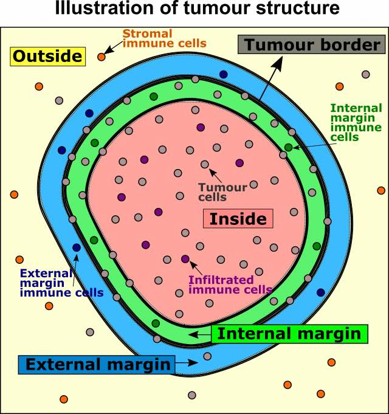

vignettes/tissue-structure.Rmd
tissue-structure.RmdIn certain analysis the focus is to understand the spatial distribution of a certain type of cell populations relative to the tissue regions.
One example of this functionality is to characterise the immune population in tumour structures. The following analysis will focus on the tumour/immune example, including determining whether there is a clear tumour margin, automatically identifying the tumour margin, and finally quantifying the proportion of immune populations relative to the margin. However, these analyses can also be generalised to other tissue and cell types.
In this vignette we will use an inForm data file that’s already been
formatted for SPIAT with format_image_to_spe(), which we
can load with data(). We will use
define_celltypes() to define the cells with certain
combinations of markers.
data("simulated_image")
# define cell types
formatted_image <- define_celltypes(
simulated_image,
categories = c("Tumour_marker","Immune_marker1,Immune_marker2",
"Immune_marker1,Immune_marker3",
"Immune_marker1,Immune_marker2,Immune_marker4", "OTHER"),
category_colname = "Phenotype",
names = c("Tumour", "Immune1", "Immune2", "Immune3", "Others"),
new_colname = "Cell.Type")In some instances tumour cells are distributed in such a way that there are no clear tumour margins. While this can be derived intuitively in most cases, SPIAT offers a way of quantifying the ‘quality’ of the margin for downstream analyses. This is meant to be used to help flag images with relatively poor margins, and therefore we do not offer a cutoff value.
To determine if there is a clear tumour margin, SPIAT can calculate the ratio of tumour bordering cells to tumour total cells (R-BT). This ratio is high when there is a disproportional high number of tumour margin cells compared to internal tumour cells.
R_BC(formatted_image, cell_type_of_interest = "Tumour", "Cell.Type")## [1] 0.2014652The result is 0.2014652. This low value means there are relatively low number of bordering cells compared to total tumour cells, meaning that this image has clear tumour margins.
We can identify margins with identify_bordering_cells().
This function leverages off the alpha hull method (Pateiro-Lopez, Rodriguez-Casal, and. 2019) from
the alpha hull package. Here we use tumour cells (Tumour_marker) as the
reference to identify the bordering cells but any cell type can be
used.
formatted_border <- identify_bordering_cells(formatted_image,
reference_cell = "Tumour",
feature_colname="Cell.Type")## [1] "The alpha of Polygon is: 63.24375"
# Get the number of tumour clusters
attr(formatted_border, "n_of_clusters")## [1] 3There are 3 tumour clusters in the image.
We can then define four locations relative to the margin based on distances: “Internal margin”, “External margin”, “Outside” and “Inside”. Specifically, we define the area within a specified distance to the margin as either “Internal margin” (bordering the margin, inside the tumour area) and “External margin” (bordering the margin, surrounding the tumour area). The areas located further away than the specified distance from the margin are defined as “Inside” (i.e. the tumour area) and “Outside” (i.e. the tumour area).

First, we calculate the distance of cells to the tumour margin.
formatted_distance <- calculate_distance_to_margin(formatted_border)## [1] "Markers had been selected in minimum distance calculation: "
## [1] "Non-border" "Border"Next, we classify cells based on their location. As a distance cutoff, we use a distance of 5 cells from the tumour margin. The function first calculates the average minimum distance between all pairs of nearest cells and then multiples this number by 5. Users can change the number of cell layers to increase/decrease the margin width.
names_of_immune_cells <- c("Immune1", "Immune2","Immune3")
formatted_structure <- define_structure(
formatted_distance, cell_types_of_interest = names_of_immune_cells,
feature_colname = "Cell.Type", n_margin_layers = 5)
categories <- unique(formatted_structure$Structure)We can plot and colour these structure categories.
plot_cell_categories(formatted_structure, feature_colname = "Structure")We can also calculate the proportions of immune cells in each of the locations.
immune_proportions <- calculate_proportions_of_cells_in_structure(
spe_object = formatted_structure,
cell_types_of_interest = names_of_immune_cells, feature_colname ="Cell.Type")
immune_proportions## Cell.Type Relative_to
## 1 Immune1 All_cells_in_the_structure
## 2 Immune2 All_cells_in_the_structure
## 3 Immune3 All_cells_in_the_structure
## 4 Immune1 All_cells_of_interest_in_the_structure
## 5 Immune2 All_cells_of_interest_in_the_structure
## 6 Immune3 All_cells_of_interest_in_the_structure
## 7 Immune1 The_same_cell_type_in_the_whole_image
## 8 Immune2 The_same_cell_type_in_the_whole_image
## 9 Immune3 The_same_cell_type_in_the_whole_image
## 10 All_cells_of_interest All_cells_in_the_structure
## P.Infiltrated.CoI P.Internal.Margin.CoI P.External.Margin.CoI P.Stromal.CoI
## 1 0.00000000 0.00000000 0.001733102 0.09658928
## 2 0.00000000 0.00000000 0.001733102 0.05073087
## 3 0.12576687 0.08071749 0.681109185 0.04585841
## 4 0.00000000 0.00000000 0.002531646 0.50000000
## 5 0.00000000 0.00000000 0.002531646 0.26261128
## 6 1.00000000 1.00000000 0.994936709 0.23738872
## 7 0.00000000 0.00000000 0.002958580 0.99704142
## 8 0.00000000 0.00000000 0.005617978 0.99438202
## 9 0.06507937 0.05714286 0.623809524 0.25396825
## 10 0.12576687 0.08071749 0.684575390 0.19317856Finally, we can calculate summaries of the distances for immune cells in the tumour structure.
immune_distances <- calculate_summary_distances_of_cells_to_borders(
spe_object = formatted_structure,
cell_types_of_interest = names_of_immune_cells, feature_colname = "Cell.Type")
immune_distances## Cell.Type Area Min_d Max_d Mean_d
## 1 All_cell_types_of_interest Within_border_area 10.93225 192.4094 86.20042
## 2 All_cell_types_of_interest Stroma 10.02387 984.0509 218.11106
## 3 Immune1 Within_border_area NA NA NA
## 4 Immune1 Stroma 84.20018 970.7749 346.14096
## 5 Immune2 Within_border_area NA NA NA
## 6 Immune2 Stroma 79.42753 984.0509 333.26374
## 7 Immune3 Within_border_area 10.93225 192.4094 86.20042
## 8 Immune3 Stroma 10.02387 971.5638 102.79227
## Median_d St.dev_d
## 1 88.23299 45.27414
## 2 133.18220 199.87586
## 3 NA NA
## 4 301.01535 187.04247
## 5 NA NA
## 6 284.09062 185.67518
## 7 88.23299 45.27414
## 8 68.19218 131.32714Note that for cell types that are not present in a tumour structure, there will be NAs in the results.
## R version 4.3.2 (2023-10-31)
## Platform: x86_64-pc-linux-gnu (64-bit)
## Running under: Ubuntu 22.04.3 LTS
##
## Matrix products: default
## BLAS: /usr/lib/x86_64-linux-gnu/openblas-pthread/libblas.so.3
## LAPACK: /usr/lib/x86_64-linux-gnu/openblas-pthread/libopenblasp-r0.3.20.so; LAPACK version 3.10.0
##
## locale:
## [1] LC_CTYPE=C.UTF-8 LC_NUMERIC=C LC_TIME=C.UTF-8
## [4] LC_COLLATE=C.UTF-8 LC_MONETARY=C.UTF-8 LC_MESSAGES=C.UTF-8
## [7] LC_PAPER=C.UTF-8 LC_NAME=C LC_ADDRESS=C
## [10] LC_TELEPHONE=C LC_MEASUREMENT=C.UTF-8 LC_IDENTIFICATION=C
##
## time zone: UTC
## tzcode source: system (glibc)
##
## attached base packages:
## [1] stats4 stats graphics grDevices utils datasets methods
## [8] base
##
## other attached packages:
## [1] SPIAT_1.4.1 SpatialExperiment_1.10.0
## [3] SingleCellExperiment_1.22.0 SummarizedExperiment_1.30.2
## [5] Biobase_2.60.0 GenomicRanges_1.52.1
## [7] GenomeInfoDb_1.36.4 IRanges_2.34.1
## [9] S4Vectors_0.38.2 BiocGenerics_0.46.0
## [11] MatrixGenerics_1.12.3 matrixStats_1.0.0
## [13] BiocStyle_2.28.1
##
## loaded via a namespace (and not attached):
## [1] bitops_1.0-7 deldir_1.0-9
## [3] gridExtra_2.3 rlang_1.1.1
## [5] magrittr_2.0.3 compiler_4.3.2
## [7] spatstat.geom_3.2-7 DelayedMatrixStats_1.22.6
## [9] systemfonts_1.0.5 vctrs_0.6.4
## [11] stringr_1.5.0 pkgconfig_2.0.3
## [13] crayon_1.5.2 fastmap_1.1.1
## [15] magick_2.8.1 XVector_0.40.0
## [17] labeling_0.4.3 scuttle_1.10.3
## [19] utf8_1.2.4 rmarkdown_2.25
## [21] ragg_1.2.6 purrr_1.0.2
## [23] xfun_0.40 zlibbioc_1.46.0
## [25] cachem_1.0.8 beachmat_2.16.0
## [27] jsonlite_1.8.7 goftest_1.2-3
## [29] highr_0.10 rhdf5filters_1.12.1
## [31] DelayedArray_0.26.7 spatstat.utils_3.0-4
## [33] Rhdf5lib_1.22.1 BiocParallel_1.34.2
## [35] parallel_4.3.2 R6_2.5.1
## [37] bslib_0.5.1 stringi_1.7.12
## [39] spatstat.data_3.0-3 limma_3.56.2
## [41] jquerylib_0.1.4 Rcpp_1.0.11
## [43] bookdown_0.36 knitr_1.45
## [45] tensor_1.5 R.utils_2.12.2
## [47] sgeostat_1.0-27 Matrix_1.6-1.1
## [49] tidyselect_1.2.0 abind_1.4-5
## [51] yaml_2.3.7 codetools_0.2-19
## [53] spatstat.random_3.2-1 spatstat.explore_3.2-5
## [55] lattice_0.21-9 tibble_3.2.1
## [57] withr_2.5.2 splancs_2.01-44
## [59] evaluate_0.22 desc_1.4.2
## [61] polyclip_1.10-6 pillar_1.9.0
## [63] BiocManager_1.30.22 generics_0.1.3
## [65] sp_2.1-1 rprojroot_2.0.3
## [67] RCurl_1.98-1.12 ggplot2_3.4.4
## [69] sparseMatrixStats_1.12.2 munsell_0.5.0
## [71] scales_1.2.1 gtools_3.9.4
## [73] glue_1.6.2 tools_4.3.2
## [75] interp_1.1-4 locfit_1.5-9.8
## [77] RANN_2.6.1 fs_1.6.3
## [79] rhdf5_2.44.0 grid_4.3.2
## [81] DropletUtils_1.20.0 edgeR_3.42.4
## [83] colorspace_2.1-0 nlme_3.1-163
## [85] GenomeInfoDbData_1.2.10 HDF5Array_1.28.1
## [87] cli_3.6.1 spatstat.sparse_3.0-3
## [89] alphahull_2.5 textshaping_0.3.7
## [91] fansi_1.0.5 S4Arrays_1.0.6
## [93] dplyr_1.1.3 gtable_0.3.4
## [95] R.methodsS3_1.8.2 sass_0.4.7
## [97] digest_0.6.33 dqrng_0.3.1
## [99] farver_2.1.1 rjson_0.2.21
## [101] memoise_2.0.1 htmltools_0.5.6.1
## [103] pkgdown_2.0.7 R.oo_1.25.0
## [105] lifecycle_1.0.3AT, YF, TY, ML, JZ, VO, MD are authors of the package code. MD and YF wrote the vignette. AT, YF and TY designed the package.